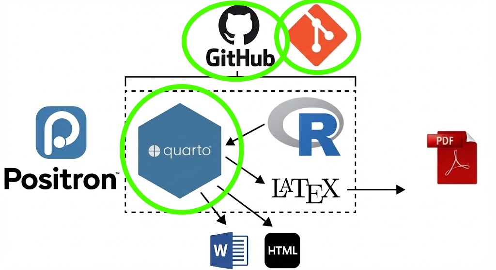
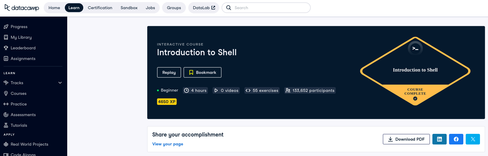
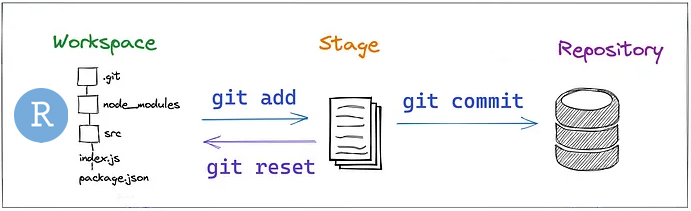
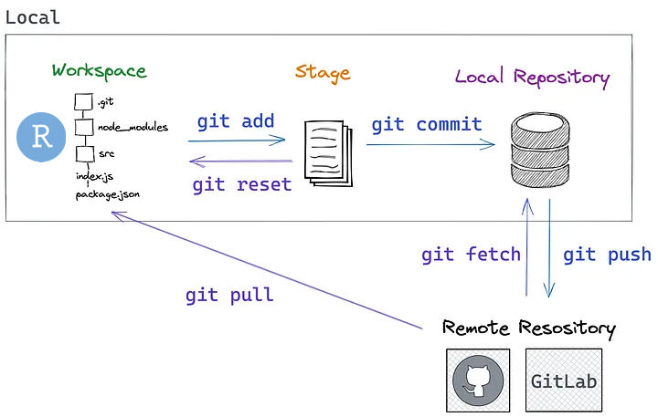
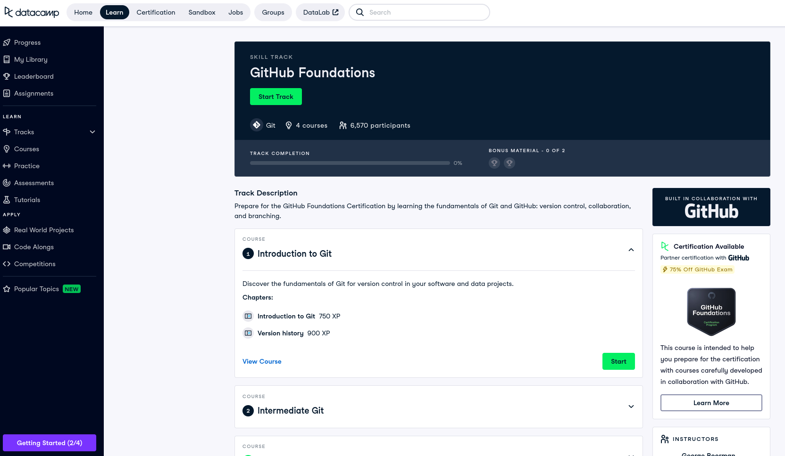
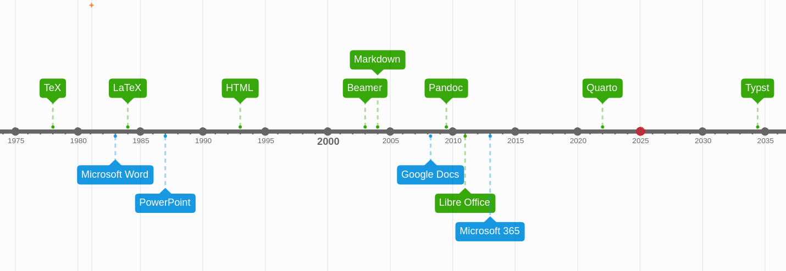

Introduction to Git, GitHub, and Quarto
Introduction to Big Data in Social Sciences
Course Structure

Tools to get there



About the terminal
- Not code but commands
- Also called shell or command line
- A file explorer
- At any time, you are in a specific location, in a directory or a folder
Terminal
macOS
- Terminal

Windows
- PowerShell

Why use the terminal?
Increased understanding of the computer and your file structure
Many tools are only available in the terminal
Getting familiar with the R console
Giving precise instructions that a mouse does not allow
Git is centered around the terminal
Best reason: Because it’s fun!
⚠️ WARNING: Danger Zone ⚠️
The terminal is powerful, but unforgiving.
No “Ctrl + Z” for deletion
Unlike your file explorer, when you delete a file with rm, it does not go to the trash. It disappears. Forever.
The forbidden command (never type this):
DataCamp
Introduction to Shell

Git

- Created by Linus Torvalds in 2005
- Version control
- Allows tracking the evolution of a project
- Useful for anything that is text, including articles and presentations
- Saves all changes made since the creation of the project (.git)
- Reproducibility and transparency

Important

Download and install Git from git-scm.com
Configure Git before starting to use it
In the terminal:
Git


GitHub

GitHub
GitHub = Git + Internet
Collaborative development platform
Hosts Git projects
Acquired by Microsoft for 7.5 billion dollars
Storage place for many open source projects
Open Source Projects on GitHub
Set Up Your Access
- Create a GitHub account:
- Generate a classic personal access token:
- Log in to GitHub and go to your Settings.
- In the Developer Settings section, click on Personal Access Tokens, then on Tokens (classic).
- Create a new token by clicking on Generate new token (classic).
- Choose unlimited duration and grant all scopes/permissions.
- Copy the generated token, as you will not be able to see it again after leaving the page.
- When Git asks for a username and password, enter:
- Username: your GitHub username.
- Password: paste the token you generated.
How to use it?
- Clone an existing project onto your computer.
- This project is now a folder on your computer. You can modify, delete, move it, etc.
- Modify the project, add files, etc.
Organize your directory and place your data
.gitignore
- Text file that specifies files and folders to ignore
- Files and folders specified in the .gitignore will not be tracked by Git
- Example of a .gitignore file content:
*.csv- Ignore all .csv filesdata/- Ignore the data folder.Rproj- Ignore all .Rproj files.Renviron- Ignore the .Renviron file
README.md Files
Main file to introduce and document a project
Must include a clear description of the project, how to install and use it
Often written in Markdown (.md)
Contains instructions for contributing and information on dependencies and licenses
Example structure:
- Project title
- Description
- How to install
- How to use
- How to contribute
Branches
- In our context, a branch is a chapter, a section, or an element of your project

Contributing? Pull Requests (PR)
Pull requests allow other users to propose changes to your project
Collaborative process:
- A contributor creates a branch with their changes
- A PR is opened to submit these changes
- The project owner can comment, request changes, or accept the PR
Important for:
- Tracking changes
- Discussion around changes
- Validation before integration
DataCamp

Markup Languages

- Allow structuring a document with tags
- Separate content from formatting
- Common examples:
- HTML for the web
- LaTeX for scientific documents
- Markdown for simplicity

History of Markup Languages


Markup Languages


Which one to choose?
They are all good!
Why Quarto?

- Very easy to use
- Included with RStudio
- Possibility to include LaTeX if necessary
- Templates are easy to create and use

Why complicate things?

- Open source - Adapted to our needs
- Automation - Reproducibility
- Compatibility - Windows, macOS, Linux
- Versatility (HTML, PDF, Word, etc.)
- A different philosophical approach than word processing software like
Word
Learning Curve


Quarto

- Enhanced Markdown
- Ability to use multiple programming languages like
JuliaorPython - Ability to use multiple
IDEslikeRStudioorVS Code Quartoallows making beautiful presentations, books, research reports, theses, websites
How to use Markdown

Level 3 Title
Level 4 Title
Bold text
Italic text
Author (year) in the text
At the end of a sentence (Author, year).
Blockquote
Normal text, writing, blablabla.
How to use Markdown

- Bullet list
- Bullet list
- Numbered sub-list
- Numbered sub-list
- Numbered sub-sub-list
- Bullet sub-sub-sub-list

.bib Files

YAML Header

---
author: "Laurence-Olivier"
title: "The YAML"
subtitle: "What is it?"
date: today
format:
pdf:
documentclass: article
geometry:
- margin=2.5cm
fontsize: 12pt
mainfont: "TeX Gyre Termes"
header-includes: |
\usepackage[english]{babel}
bibliography: references.bib
csl: https://raw.githubusercontent.com/citation-style-language/styles/master/chicago-author-date.csl
---